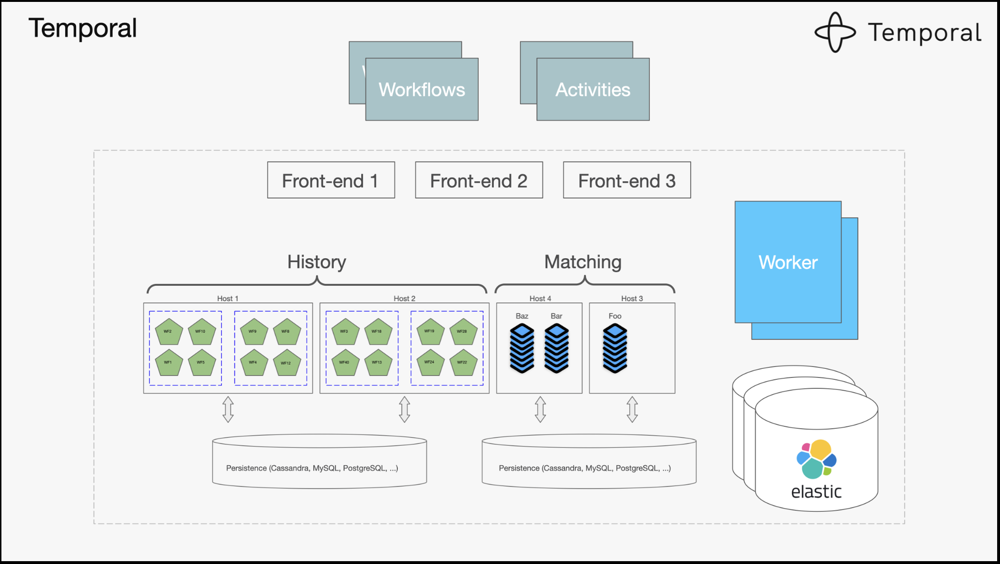
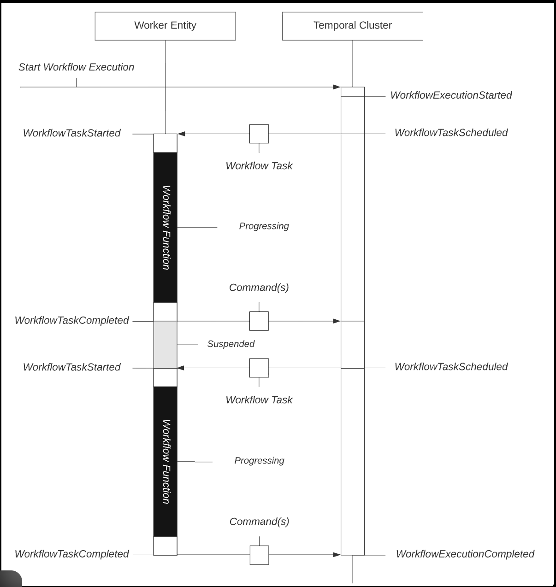
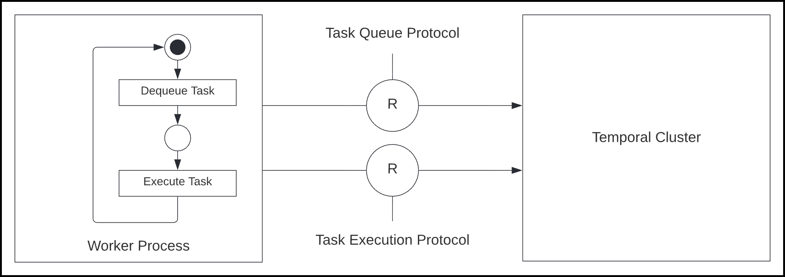
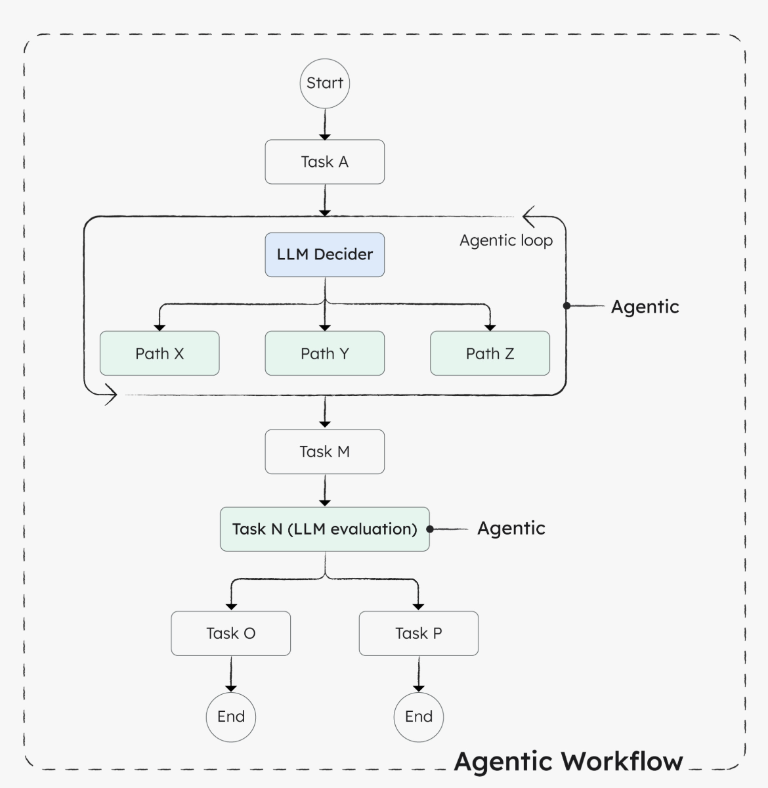
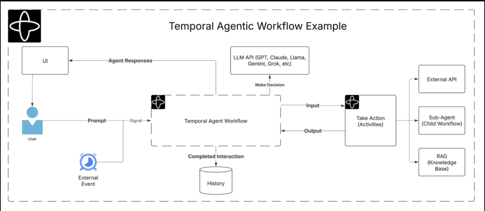
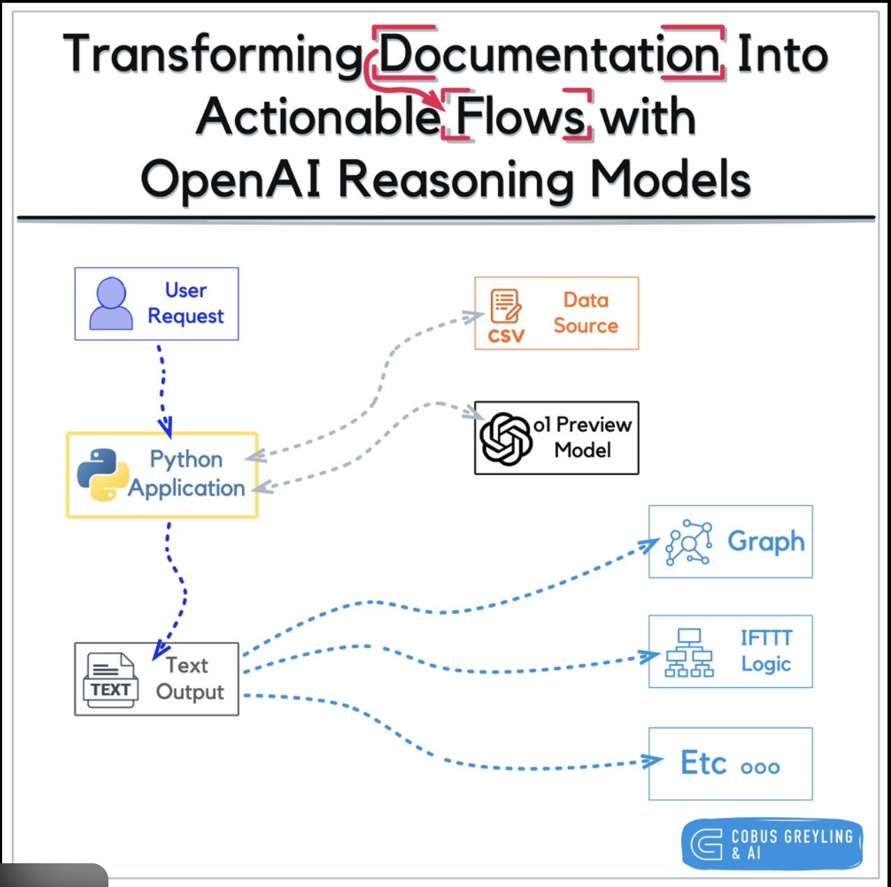

What is Temporal?#
Temporal is a workflow orchestration platform that lets you run long-running, reliable, fault-tolerant workflows in distributed systems.
Temporal guarantees that your code continues exactly where it left off — even if your service crashes, restarts, or runs for days.
Why Temporal exists (the real problem)#
Modern systems (microservices, cloud, AI agents) have problems like:
- Processes crash
- Networks fail
- APIs timeout
- Pods restart
- Workflows take hours/days
- Humans need to approve steps
Traditional tools lose state when this happens.
Temporal was built to solve this exact reliability gap.



It records every step of your workflow so it can:
- Retry safely
- Resume after failure
- Wait indefinitely
- Guarantee no duplicate execution
Core components#
1️⃣ Temporal Server (runs separately)
-
Manages workflow state
-
Stores execution history
-
Handles retries, timers, signals
2️⃣ Workers (your code)
-
Execute workflow logic
-
Execute activities (real work)
3️⃣ Database
- Persists workflow history (Postgres, MySQL, Cassandra)
What makes Temporal special?#
🧠 Durable execution
If your app crashes at step 7 of 20:
➡️ Temporal restarts from step 7, not step 1
🔁 Automatic retries
- No custom retry logic needed.
⏱ Long waits (hours / days / months)
- This does NOT block memory or CPU.
🧍 Human-in-the-loop
✅ Exactly-once execution#
Even if:
- Worker crashes
- Network flakes
- Retry happens
The action is executed once and only once.
What Temporal is NOT#
❌ Not an AI framework
❌ Not a message queue
❌ Not Kubernetes
❌ Not a replacement for Terraform/Ansible
❌ Not a scheduler like cron
Temporal is about correctness and durability, not intelligence.
Where Temporal is used#
Common real-world use cases
-
Microservice orchestration
-
Payment processing
-
Order fulfillment
-
Cloud provisioning workflows
-
Incident remediation
-
Agentic AI orchestration
Companies using it include Uber, Netflix, Stripe, Datadog, etc.
Temporal vs traditional approaches#
| Problem | Without Temporal | With Temporal |
|---|---|---|
| Crash recovery | Manual | Automatic |
| Retries | Custom code | Built-in |
| Long waits | Dangerous | Safe |
| State persistence | Ad-hoc DB | Native |
| Observability | Logs only | Full UI |
Temporal in Agentic AI (why it comes up so often)#



Agentic AI workflows:
-
Run for long time
-
Call many tools
-
Fail often
-
Need approval
-
Must resume safely
Temporal provides the reliability layer for agents.
Agents reason — Temporal remembers.
Temporal vs Airflow vs Step Functions#
High-level comparison
| Dimension | Temporal | Apache Airflow | AWS Step Functions |
|---|---|---|---|
| Core purpose | Durable workflow execution | Batch job scheduling | Cloud-native orchestration |
| Primary design | Stateful, fault-tolerant workflows | DAG-based schedulers | Managed state machine |
| Typical users | Platform, backend, agentic AI teams | Data engineering | AWS-centric teams |
| Runs where | Self-hosted / Cloud | Self-hosted / Managed | Fully managed (AWS) |
Execution & reliability
| Capability | Temporal | Airflow | Step Functions |
|---|---|---|---|
| Crash recovery | ✅ Automatic, exact resume | ❌ Task retry only | ⚠️ State retry, limited |
| Long-running (days/months) | ✅ Native | ❌ Not safe | ⚠️ Limited (timeouts) |
| Exactly-once execution | ✅ Guaranteed | ❌ No | ⚠️ Partial |
| Automatic retries | ✅ Built-in, deterministic | ⚠️ Task-level only | ⚠️ Config-based |
| Timers / sleeps | ✅ Native (no resources) | ❌ Not designed | ⚠️ Limited |
State & workflow model
| Aspect | Temporal | Airflow | Step Functions |
|---|---|---|---|
| State persistence | Durable execution history | Metadata only | JSON state |
| Workflow definition | Code (Python/Go/Java) | DAG (Python) | JSON / YAML |
| Dynamic workflows | ✅ Yes | ❌ No | ⚠️ Limited |
| Human-in-the-loop | ✅ First-class | ❌ No | ⚠️ Workarounds |
| Versioning workflows | ✅ Safe versioning | ❌ Painful | ⚠️ Manual |
Agentic AI suitability (important)
| Requirement | Temporal | Airflow | Step Functions |
|---|---|---|---|
| Long-running agents | ✅ Excellent | ❌ No | ⚠️ Limited |
| Tool orchestration | ✅ Yes | ❌ No | ⚠️ AWS-only |
| Human approvals | ✅ Native | ❌ No | ⚠️ SNS/Lambda hacks |
| Multi-agent coordination | ✅ Strong | ❌ No | ❌ Weak |
| Failure recovery | ✅ Deterministic | ❌ Manual | ⚠️ Partial |
Cloud & ecosystem
| Aspect | Temporal | Airflow | Step Functions |
|---|---|---|---|
| Cloud neutrality | ✅ Multi-cloud | ✅ Multi-cloud | ❌ AWS only |
| Vendor lock encouraging | ❌ No | ❌ No | ✅ Yes |
| Infra control | Full control | Full control | AWS-managed |
| Cost model | Infra-based | Infra-based | Pay per transition |
Complexity & operations
| Factor | Temporal | Airflow | Step Functions |
|---|---|---|---|
| Learning curve | ⚠️ Medium–High | ⚠️ Medium | ✅ Low |
| Operational overhead | ⚠️ Medium | ⚠️ High | ✅ None |
| Debuggability | ✅ Excellent UI | ⚠️ Logs-heavy | ⚠️ CloudWatch |
| Best for teams | Platform / SRE | Data teams | App teams |
| Use case | Winner |
|---|---|
| Agentic AI | 🏆 Temporal |
| Data pipelines | 🏆 Airflow |
| AWS-native glue | 🏆 Step Functions |
| Enterprise remediation | 🏆 Temporal |
| Simple orchestration | 🏆 Step Functions |